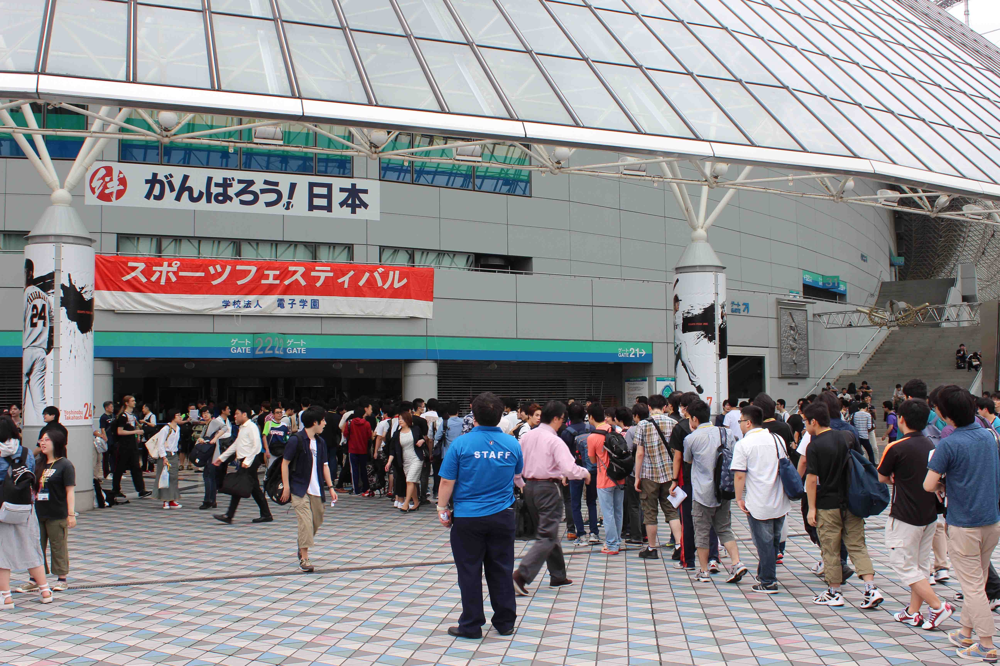
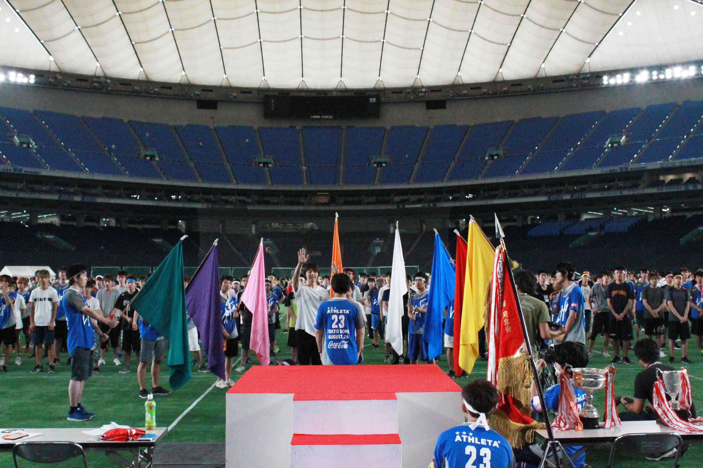

参加者へ
今年のスポーツフェスティバルまであとわずかとなりました。さて、東京ドームは野球施設ですので、利用するにあたっていくつか気をつけてもらわなければならないことがあります。 当日の参加要領と細かい規則などを、こちらのページに記載しますので必ず守って下さい。 参加規定 … 学校行事としてすべての学生が参加し、全員が競技に出場する
持ち物
セキュリティーカード
- セキュリティーカードは必ず着用してください。
- 不審者侵入防止のため、２２番ゲートから入場する時に、セキュリティカードのチェックを行います。
- 忘れた場合は、ゲート横受付にて学籍番号と氏名のチェックを行います。
昼食・飲料について
- フェスティバル実施中、一時外出は許可しませんので、昼食は事前に準備して下さい
- 朝の集合前に東京ドームのまわりでの調達は難しいと思われますので、自宅近辺での準備をお勧めします
- 飲み物は、ペットボトルまたは水筒で持ち込んで下さい（例：ビン、カンは×）
- 昼食時間は特に定めません、各自とるようにして下さい
- 昼食場所は、養生シート上の指定場所です。
- 会場内にも売店がありますが、数に限りがあるため自宅近辺で準備する事をお勧めします。
運動用具の持ち込みについて
不要ですのでサッカーボール、バレーボールなど、野球用バット、ボール、グローブの持ち込みを禁止します
セクショントップへ入場について
入場・当日の流れ
- 開催期日：平成30年9月18日（火）
- 8時30分～：一般学生集合・入場 ※学科によって集合・入場時間が違います 10時00分 開会
- 16時00分：終了予定
- 当日集合場所：２２番ゲート
- 更衣室の場所：２２番ゲートから入り、１塁側１Ｆ内野席階段を グランドまで降りてから、経路のとおり入る。
- 集合場所： 集合時間はチームの色に異なります。こちらにチームの色をチェックした上、以下に集合時間を確認ください。
入場について
- 集合場所は、「２２番ゲート」です。集合時刻までに到着したら、順次並んで入場して下さい。
- ゲートは、回転扉３台。警備員の誘導に従って入場して下さい。
- 入場時には同時に手荷物チェックが行われます
- 入場したら、女子は更衣室（イベントＢ）で着替え。男子は１塁側内野１Ｆスタンドの指定場所で着替えて下さい。
- 女子更衣室に行く経路は一度グランドに降りますので、あらかじめ運動シューズに履き替えてください。
- 着替え後は、男女とも１塁側内野席１Ｆスタンドの指定場所で待機して下さい。オープニング終了まで禁煙です。
- メイン会場の準備が完了したら放送で合図をしますので、全ての荷物を持ってグランドに降り、トラック周りのクラス別座席に移動して下さい。スタンドに荷物を置かないようにして下さい（９：２０頃、担任の先生が目印になっています）。
「クラス対抗リレー」に出場の方
- 最初の種目（クラス対抗リレー予選男女）に出場の選手は、メイン会場に移動したら、すぐにメイン会場入場門の受付に集合して、エントリーを行って下さい
- 5名そろわないと受付できません。受付が終わりしだい、実行委員の指示に従い、中央に整列してオープニングに備えて下さい。
服装について
服装、シューズについて
- 服装は体操着が必須です。（ジーパン、スラックス、ワイシャツ不可）
- シューズは運動用シューズを着用して下さい。ハダシ厳禁。スパイク、ゴムスパイク、トレッキングシューズなど、靴底がデコボコしたものは不可。
- グランド内において、装飾品（ネックレス、指輪、イヤリング、ピアス、ピン止め、安全ピン等）の着用は、一切禁止します。
- コスプレ、着ぐるみに関しては、一般常識に反するもの
競技と応援
について

参加規定
学校行事としてすべての学生が参加し、全員が競技に出場します。
色別グループ
チームの色とその集合時間が異なるので、確認してください。
| 8:30 | |
|---|---|
| 橙 | ネットワークセキュリティ科／Webデザイン科／電気工学科／アニメーション研究科 |
| 青 | 情報処理科／電気工事技術科 |
| 8:45 | |
| 赤 | コンピュータグラフィックス科 |
| 桃 | グラフィックデザイン科／高度情報処理科／ケータイ・アプリケーション科／AIシステム科 |
| 白 | ゲーム制作研究科／高度電気工学科 |
| 9:00 | |
| 緑 | ゲーム制作科 |
| 紫 | 情報システム開発科／アニメーション科／情報ビジネスライセンス科／電子応用工学科 |
| 黄 | CG映像制作科／コンピュータグラフィックス研究科／ゲーム企画科 |
各競技の選手召集について
- 原則的に、２つ手前の競技終了後に召集の案内が放送されます。案内されしだい召集場所に集合して下さい。
- 選手に欠員がある場合、クラスまたは同色（クラス対抗リレーはクラスのみ）から代理をたててもかまいません。
- 競技開始時点でメンバーが揃わない場合、失格になることがあります。
応援について
- 応援は各色、クラスごとに行って下さい。
- 応援に必要なツールとして、メガホン、ラッパ、タイコ、タンバリン、各色４本の応援大旗を提供します。（大会終了後返却）
フィナーレについて
フィナーレについて
- フィナーレには、ファイナル種目｢色別対抗リレー｣の選手が参加します。
- 該当の学生は、競技終了後、実行委員の指示に従いメイン会場中央に集合して下さい。
- フィナーレが始まったら、禁煙です。
終了後の退場について
- 終了後、まず女子が更衣室に移動して着替えます。着替えが済みしだい、入場と逆経路で２２番ゲートから退場して下さい。
- 男子はクラス別座席で着替えます。速やかに着替えを済ませて、２２番ゲートから退場して下さい。
その他の
注意事項
貴重品について
- 貴重品は、原則的に持ち込まないでください。各自の持ち物は、各自で管理して下さい。
- 各自の荷物は、クラス別座席に置いて下さい。
- 盗難にはいっさいの責任を負いかねます。貴重品を座席においたまま競技に参加しないようにして下さい。
- 競技参加時は、クラスの友人に預けるなどして各自管理徹底をお願いします。
- 女子更衣室（イベントＢ）に荷物を置かないようにお願いします。
- 有料ロッカーが少しだけあります。
タバコ・ゴミについて
- 喫煙は喫煙所（１塁側内野席１Ｆスタンド後方 コンコース）で行って下さい。喫煙所以外の場所では厳禁です。
- 喫煙所は１箇所です。あまり広くありませんので、当日は禁煙に努めるなど、みなさんの協力をお願いします。
- 座席、通路、トイレでは禁煙です！！
- ゴミは、各自でドーム内にあるゴミ箱に捨ててください。ゴミの分別（ペットボトル、可燃、不燃）に協力して下さい。
けが、体調不良について
- 競技中の突発事故によるケガなどに対しては、実行委員が対応します。
- それ以外のケガ、体調不良の学生は、「救護係」まで申し出て下さい。
立入禁止区域について
- 本校関係者が立ち入ることができる場所は、２２番ゲートから１塁側１階内野席スタンドおよびその周辺とトイレ、喫煙所、ならびに グランドのみです。
- 標識やフェンスで区分し、警備の先生が立ちますので、標識や先生の指示に従い、立入禁止区域には、侵入しないようにして下さい。